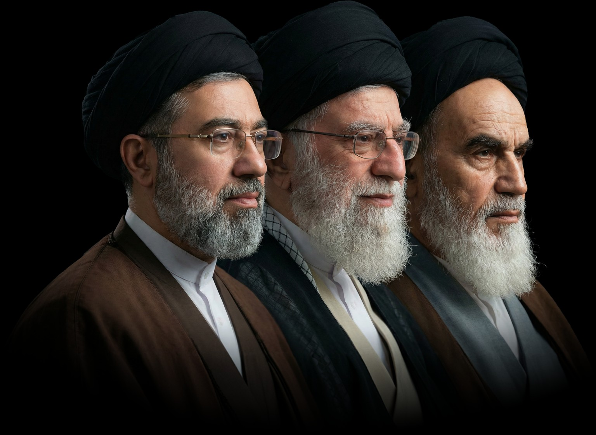

نماهنگ تصویری
مشاهده در آپارات ↗زهرای ایران
با صدای کربلایی حسین اردستانی
برنامه امروز و دو روز آینده
دیدن نماهنگهای تصویری کربلایی حسین اردستانی
با صدای کربلایی حسین اردستانی
کربلایی حسین اردستانی
شنیدن نماهنگهای صوتی کربلایی حسین اردستانی
لحظههایی از محافل و مجالس اهلبیت علیهمالسلام
کانال ایتا و صفحه آپارات کربلایی حسین اردستانی
اخبار، مجالس و محتوای منتشرشده در کانال رسمی.
نماهنگها، کلیپها و آثار ویدیویی منتشرشده.
نگاهی به مسیر کربلایی حسین اردستانی
نام کربلایی حسین اردستانی برای اهل محفل و دوستداران مدیحهسرایی اهلبیت علیهمالسلام نامی آشناست؛ صدایی که از قم تا شهرها و استانهای دیگر، در مجالس عزا و شادی اهلبیت شنیده شده و در دل بسیاری از مستمعان جا باز کرده است.
داستان این مسیر از کودکی آغاز میشود؛ از روزهایی که در محافل قرآنی و مجالس اهلبیت حاضر بود و با فضای قرآن، ذکر و مداحی انس گرفت. همان انس نخستین، پایهی ادب و اخلاصی شد که امروز در هر مجلس او دیده میشود: نوایی که پیش از هر چیز از دل برمیآید و بر دل مینشیند.
او با مرثیهخوانی و مدیحهسرایی، سالهاست در شهر مقدس قم و استانهای کشور، مستمعان را به روضهی اباعبدالله الحسین علیهالسلام و ذکر فضایل خاندان عصمت و طهارت میخواند. محافل شبانهی خیابانی و هیئتها، مجالس شور و حالی که میان مردم شکل میگیرد، همانجاست که صدای او بیشتر از هر جا شنیده میشود.
در کنار حضور در مجالس، انتشار نماهنگهای صوتی و تصویری هم دامنهی مخاطبان او را فراتر از محفل برده است؛ آثاری مانند «زهرای ایران» و «لبیک یا خامنهای» که با استقبال دوستداران همراه بوده و از طریق کانال ایتا و صفحه آپارات در دسترس همگان است.
برای دعوت به مجالس و هیئتها، از بخش «هماهنگی مراسم» با ادمین در ارتباط باشید.

برای دعوت به روضهخوانی، محافل ولادت و شهادت، جشنها، هیئتها و مراسم سالگرد، با ادمین کانال و سایت در ارتباط باشید. هماهنگیها فقط از طریق آیدی زیر انجام میشود.
@hosein_Ardestaniلطفاً اطلاعات بالا را در همان پیام نخست بنویسید تا هماهنگی سریعتر انجام شود.